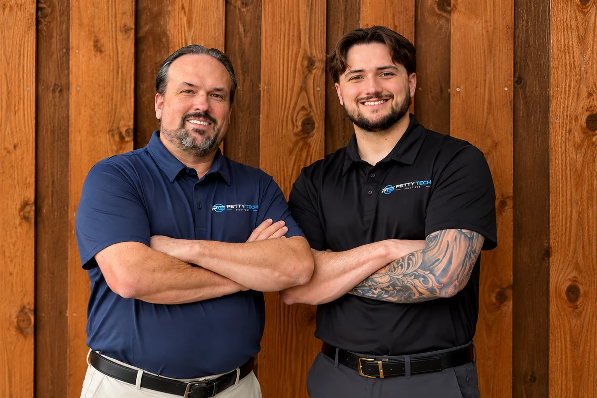

FAMILY-OWNED / AVAILABLE THROUGHOUT THE UNITED STATES
Expert Remote Computer Support — Anywhere in the USA
Get professional computer help from anywhere in the United States — without leaving your home. Petty Tech Solutions offers secure remote computer support to diagnose and resolve common technology problems. Our father-and-son team provides friendly, straightforward IT assistance at an affordable, transparent price.
REMOTE PC TROUBLESHOOTING
Everyday problems.
Help from home.
Online computer repair starts with understanding what’s wrong. Here are common issues we can assess remotely.
- Windows troubleshooting and software errors
- Computer performance and speed issues
- Basic malware and unwanted software removal
- Email setup and troubleshooting
- Browser problems and unwanted pop-ups
- Software installation and configuration
- Printer software and connection troubleshooting
- General remote computer diagnostics
What may need hands-on help?
Hardware failures, severe infections and problems requiring physical access may not be fixable remotely. Your computer must be able to turn on, connect to the internet and run the support software. We’ll explain when a local repair or another approach is needed. Not every issue can be resolved in one session or remotely.
HOW REMOTE SUPPORT WORKS
A real technician.
A straightforward process.
Tell us what’s happening
Contact Petty Tech Solutions and describe the problem.
Confirm the fit and price
We confirm whether your issue is suitable for remote support and explain the price before work begins.
Start your attended session
You start a secure, attended session using our approved support software. We provide instructions after confirming your request.
Troubleshoot together
Our technician works through the issue while you remain in control. You can watch the work and end the session.
Review the work
We explain what was done and any next steps, then complete payment through our normal invoicing process.

NORTH TEXAS ROOTS. NATIONWIDE TECH SUPPORT.
People you can talk to.
Our father-and-son team combines personal service with practical IT knowledge. We explain the issue and your options in plain English, with time for your questions.
Remote support is available throughout the United States. On-site visits remain available in Frisco, Little Elm, Prosper, The Colony and surrounding North Texas communities by request.
Get Remote Support →06 / LET’S GET IT WORKING
A little help.
A lot less hassle.
Tell us what’s going on and how to reach you. We’ll discuss the next steps together.
PREFER TO TALK? CALL US(469) 732-7955jamespetty@pettytechsolutions.comGet Remote Support
Online requests are not available yet. Please call or email us for help.